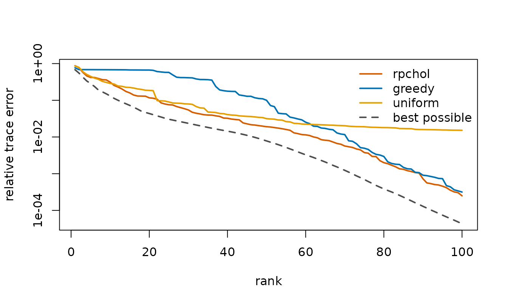
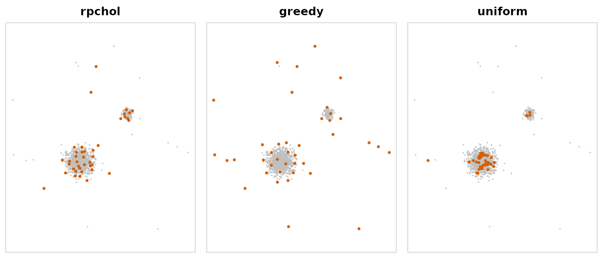
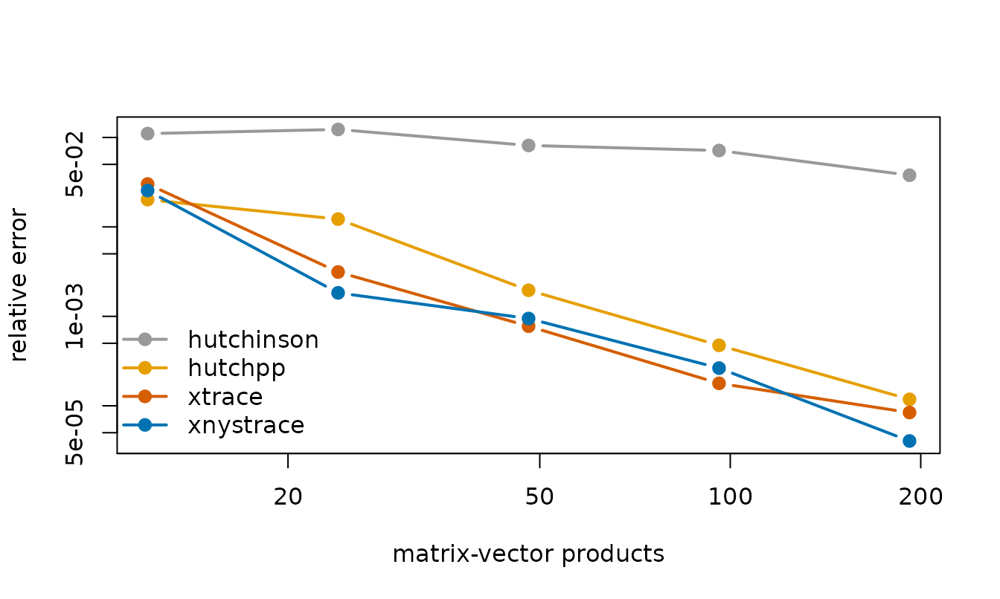
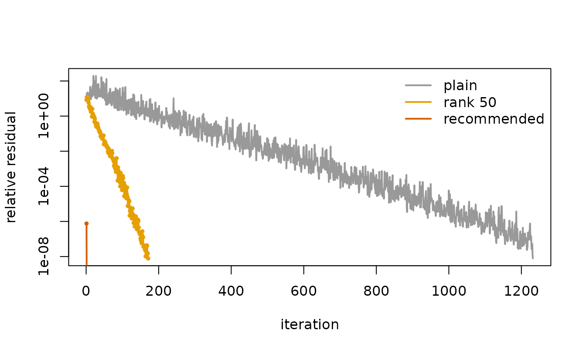

Large positive-semidefinite matrices turn up throughout statistics: kernel matrices in Gaussian-process regression, relationship matrices in quantitative genetics, covariance matrices in spatial models. Holding one in memory takes numbers and factorizing it takes about operations, so exact methods run out of room long before reaches a hundred thousand.
Recent work in randomized numerical linear algebra shows how much can be done without either step. matsketch brings four of these methods to R.
| Task | Function | What it needs from the matrix |
|---|---|---|
| Low-rank approximation | rpchol() |
about of its entries |
| Trace and diagonal |
trace_est(), diag_est()
|
products |
| Regularized linear systems |
nystrom_precond(), pcg()
|
products, plus one low-rank approximation |
| Variance components | reml_sketch() |
all of the above |
This vignette runs each one on a problem where its advantage is easy
to see. vignette("genomic-reml", package = "matsketch")
develops the last one in detail.
Approximating a kernel matrix from a few of its columns
A Nyström approximation rebuilds a positive-semidefinite matrix from a subset of its columns, , and everything depends on which columns are chosen. Randomly pivoted Cholesky (Chen, Epperly, Tropp and Webber, 2025) chooses them one at a time, each with probability proportional to the diagonal of the part of not yet explained. Greedy pivoting, the classical rule, always takes the largest residual instead, and uniform sampling ignores the matrix altogether.
The points below form a large cluster, a small cluster and a scatter of outliers, a layout that defeats both classical rules.
set.seed(1)
X <- rbind(
matrix(rnorm(2 * 1300, sd = 0.5), ncol = 2), # large cluster
matrix(rnorm(2 * 180, sd = 0.2), ncol = 2) + 4, # small cluster
matrix(runif(2 * 20, -6, 10), ncol = 2) # outliers
)
K <- kernel_matrix(X, "gaussian", bandwidth = 0.5)
K
#> <matsketch_kernel> gaussian kernel on 1500 points, bandwidth 0.5
#> full matrix would hold 2,250,000 entries; nothing is storedkernel_matrix() stores only the points and computes
entries when an algorithm asks for them. Each rule gets a budget of 100
columns, and trace_path records the error after every
pivot, so one fit per rule traces out the whole curve. The best possible
error at each rank comes from the eigenvalues, which only a small
example lets us compute:
rules <- c(rpchol = "accelerated", greedy = "greedy", uniform = "uniform")
fits <- lapply(rules, function(r) rpchol(K, k = 100, method = r))
ev <- eigen(as.matrix(K), symmetric = TRUE, only.values = TRUE)$values
best <- 1 - cumsum(ev[1:100]) / sum(ev)
ranks <- c(20, 40, 100)
tab <- cbind(sapply(fits, function(f) f$trace_path[ranks]), best = best[ranks])
rownames(tab) <- paste("rank", ranks)
signif(tab, 2)
#> rpchol greedy uniform best
#> rank 20 0.12000 0.67000 0.190 4.4e-02
#> rank 40 0.03200 0.18000 0.041 1.4e-02
#> rank 100 0.00025 0.00032 0.015 4.3e-05
cols <- c(rpchol = "#D55E00", greedy = "#0072B2", uniform = "#E69F00")
plot(best, log = "y", type = "l", lwd = 2, lty = 2, col = "grey30",
ylim = range(best, unlist(lapply(fits, `[[`, "trace_path"))),
xlab = "rank", ylab = "relative trace error")
for (r in names(fits)) lines(fits[[r]]$trace_path, lwd = 2, col = cols[[r]])
legend("topright", c(names(fits), "best possible"), col = c(cols, "grey30"),
lty = c(1, 1, 1, 2), lwd = 2, bty = "n")
Randomly pivoted Cholesky stays within a small factor of the best possible error at every rank. Greedy pivoting falls far behind at first, because it spends its early pivots on the outliers and on isolated points at the edges of the clusters, each of which explains little beyond itself; it catches up only after working through them. Uniform sampling keeps pace early on and then stalls. It almost never draws an outlier, and every outlier it misses leaves a whole diagonal entry unexplained: the 20 outliers hold 1.3% of the trace, which is about where its error levels off. The first 40 pivots of each rule show where the budget goes:
op <- par(mfrow = c(1, 3), mar = c(0.5, 0.5, 2, 0.5))
for (r in names(fits)) {
plot(X, pch = 16, cex = 0.35, col = "grey75", asp = 1, axes = FALSE,
xlab = "", ylab = "", main = r)
points(X[fits[[r]]$pivots[1:40], ], pch = 16, cex = 0.7, col = "#D55E00")
box(col = "grey85")
}
par(op)All three rules read the same small share of the matrix; they differ only in which entries they read.
sapply(fits, function(f) f$entries / K$n^2)
#> rpchol greedy uniform
#> 0.06795556 0.06733333 0.06733333The default method = "accelerated" draws pivots from the
same distribution as one-at-a-time random pivoting but proposes them in
blocks and accepts each by rejection sampling (Epperly, Tropp and
Webber, 2025), so most of its work is matrix-matrix arithmetic.
Estimating a trace from matrix-vector products
Traces of matrices that are expensive to form are everywhere: the effective degrees of freedom of a smoother, the derivative of a log-determinant, the score equations of REML. The Girard-Hutchinson estimator averages over random vectors and needs only products with , but its error falls only like in the number of products . Hutch++ (Meyer, Musco, Musco and Woodruff, 2021) first removes a low-rank approximation of and estimates only what is left. XTrace (Epperly, Tropp and Webber, 2024) does the same, but uses every product for both jobs through a leave-one-out construction, and XNysTrace is its counterpart for positive-semidefinite matrices.
A test matrix with eigenvalues :
set.seed(2)
n <- 500
U <- qr.Q(qr(matrix(rnorm(n * n), n)))
A <- U %*% ((1:n)^-2 * t(U))
trA <- sum(diag(A))
trA
#> [1] 1.642936
trace_est(A, m = 60)
#> <trace_est> xtrace, 60 matrix-vector products
#> estimate : 1.64281
#> standard error : 0.001416XTrace reports a standard error from the spread of its leave-one-out estimates. The median relative error of each estimator over ten repetitions, as the budget of products grows:
budgets <- c(12, 24, 48, 96, 192)
methods <- c(hutchinson = "#999999", hutchpp = "#E69F00",
xtrace = "#D55E00", xnystrace = "#0072B2")
err <- sapply(names(methods), function(meth) {
sapply(budgets, function(m) {
median(replicate(10, abs(trace_est(A, m, meth)$estimate - trA) / trA))
})
})
matplot(budgets, err, log = "xy", type = "b", pch = 19, lty = 1, lwd = 2,
col = methods, xlab = "matrix-vector products",
ylab = "relative error")
legend("bottomleft", names(methods), col = methods, lwd = 2, pch = 19,
bty = "n")
The Girard-Hutchinson line has slope
;
the others fall far faster, because each extra product also sharpens the
low-rank part. diag_est() applies the same construction to
the diagonal:
Solving regularized linear systems
Systems arise in kernel ridge regression, in Gaussian-process prediction, and at every step of a REML fit. Conjugate gradients need only products with , but when is small they need many of them. Frangella, Tropp and Udell (2023) precondition with a low-rank approximation , and show that a rank of about three times the effective dimension keeps the iteration count small regardless of .
effective_dim() estimates
from any low-rank approximation and returns the recommended rank:
set.seed(3)
Z <- matrix(rnorm(3 * 1000), ncol = 3)
K2 <- as.matrix(kernel_matrix(Z, "gaussian", bandwidth = 2))
b <- rnorm(1000)
mu <- 1e-4
ed <- effective_dim(rpchol(K2, k = 200), mu)
ed
#> $d_eff
#> [1] 122.2534
#>
#> $recommended_rank
#> [1] 369
#>
#> $sufficient
#> [1] FALSEThe estimate from a rank-200 approximation already asks for more than rank 200, so the preconditioner is built at the recommended rank. For comparison, a preconditioner of rank 50 and no preconditioner at all:
precond_of_rank <- function(k) nystrom_precond(rpchol(K2, k), mu)
runs <- list(
plain = pcg(K2, b, mu = mu, maxit = 5000),
`rank 50` = pcg(K2, b, mu = mu, precond = precond_of_rank(50)),
recommended = pcg(K2, b, mu = mu,
precond = precond_of_rank(ed$recommended_rank))
)
sapply(runs, `[[`, "iterations")
#> plain rank 50 recommended
#> 1273 170 2
cols <- c("#999999", "#E69F00", "#D55E00")
plot(runs$plain$residuals, log = "y", type = "l", lwd = 2, col = cols[1],
xlab = "iteration", ylab = "relative residual")
for (i in 2:3) {
lines(runs[[i]]$residuals, type = "o", pch = 19, cex = 0.4, lwd = 2,
col = cols[i])
}
legend("topright", names(runs), col = cols, lwd = 2, bty = "n")
Even a rank of 50 cuts the count from 1273 iterations to 170. At the recommended rank the approximation captures nearly all of the matrix above the level , and the preconditioned system is so well conditioned that 2 iterations are enough.
The preconditioner depends on
only through a diagonal, so one approximation serves every value of
an application visits. pcg() also accepts a matrix of
right-hand sides and advances all of them together, which turns each
step into one matrix-matrix product.
Variance components on a genomic relationship matrix
reml_sketch() combines the three tools to fit
with
by average-information REML, without ever forming
.
With grm_matrix() it does not form
either, only the genotypes:
set.seed(4)
dat <- sim_genomic(n = 1000, p = 2000, h2 = 0.5, pops = 4)
G <- grm_matrix(dat$M)
G
#> <matsketch_grm> relationships among 1000 individuals from 2000 markers
#> full matrix would hold 1,000,000 entries; only genotypes are stored
fit <- reml_sketch(dat$y, G)
fit
#> <reml_sketch> converged in 3 iterations (rpchol rank-100 preconditioner, XTrace with 40 products)
#> estimate std.error
#> genetic 0.5390 0.0695
#> residual 0.4409 0.0510
#> h2 0.5500 0.0563
#> linear systems solved : 136 (mean 9.4 CG iterations)
exact <- reml_exact(dat$y, as.matrix(G))
rbind(sketched = c(fit$sigma2, h2 = fit$h2),
exact = c(exact$sigma2, h2 = exact$h2))
#> genetic residual h2
#> sketched 0.5389685 0.4409309 0.5500243
#> exact 0.5501416 0.4329094 0.5596267At this size the exact fit is still quick. How the two scale, and how
close they stay, is the subject of
vignette("genomic-reml", package = "matsketch").
References
Chen, Y., Epperly, E. N., Tropp, J. A. and Webber, R. J. (2025). Randomly pivoted Cholesky: practical approximation of a kernel matrix with few entry evaluations. Communications on Pure and Applied Mathematics 78, 995–1041. doi:10.1002/cpa.22234
Epperly, E. N., Tropp, J. A. and Webber, R. J. (2024). XTrace: making the most of every sample in stochastic trace estimation. SIAM Journal on Matrix Analysis and Applications 45, 1–23. doi:10.1137/23m1548323
Epperly, E. N., Tropp, J. A. and Webber, R. J. (2025). Embrace rejection: kernel matrix approximation by accelerated randomly pivoted Cholesky. SIAM Journal on Matrix Analysis and Applications 46, 2527–2557. doi:10.1137/24m1699048
Frangella, Z., Tropp, J. A. and Udell, M. (2023). Randomized Nyström preconditioning. SIAM Journal on Matrix Analysis and Applications 44, 718–752. doi:10.1137/21m1466244
Meyer, R. A., Musco, C., Musco, C. and Woodruff, D. P. (2021). Hutch++: optimal stochastic trace estimation. Symposium on Simplicity in Algorithms, 142–155. doi:10.1137/1.9781611976496.16